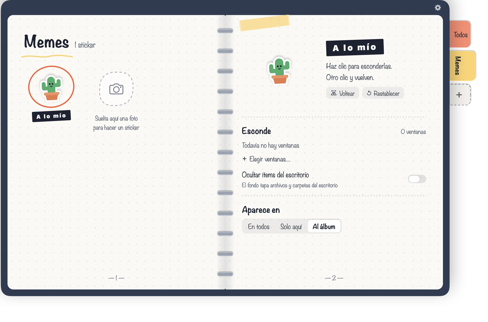

Un álbum de stickers para el escritorio de tu Mac
Un clic en el sticker. Las ventanas desaparecen.
Pega Shoo en tu escritorio y dile de qué apps o ventanas se encarga. Un clic y desaparecen todas; otro clic y todo vuelve exactamente a su sitio.
Descargar en la Mac App Store


Cada sticker se encarga de una parte de esta página. Haz clic en uno.
Un clic. Escritorio limpio.
Pruébalo: elige un momento y haz clic en el diablillo.
Hazlo tuyo
Convierte cualquier foto en sticker —tu perro, tus amigos, tu meme favorito— y dale a cada uno su tarea.

Arrastra una foto al álbumo simplemente haz clic en ella
- Suelta una foto y Shoo la recorta en tu Mac
- Ordena los stickers en tus propias pestañas y colores
- Cada sticker esconde su propio grupo de ventanas
Cómo funciona
Tres pasos, sin pantallas de configuración.
Despega un sticker
Arrastra un sticker fuera del álbum y suéltalo donde quieras en el escritorio.
Señala las ventanas
Elige «Elegir ventanas…» y haz clic en las ventanas o apps de las que se encargará este sticker.
Clic. ¡Fuera!
Haz clic en el sticker para esconderlas todas. Otro clic y vuelven.
Detalles que lo hacen agradable
Todo ocurre en tu Mac, dentro del álbum.
- Una ventana o la app enteraSafari, Chrome y Notas pueden esconder una sola ventana; las demás apps se esconden enteras.
- Oculta los ítems del escritorioMientras un sticker está activo, tu fondo de pantalla tapa los archivos del escritorio.
- Todos los escritorios o solo estePon un sticker en todos los escritorios o déjalo en uno.
- Edita dentro del álbumCambia el nombre, el tamaño, gira o voltea los stickers ahí mismo.
- Sin estorbarMuestra Shoo en el Dock, en la barra de menús o en ningún sitio.
- Diez idiomasEnglish, Español, Deutsch, Français, Português, 繁體中文, 简体中文, 日本語, 한국어, ไทย.
Empieza gratis
El diablillo es tuyo gratis, con todas las funciones. Lo demás se desbloquea una sola vez, sin suscripción.
 Gratis
Gratis
El diablillo rojo
- Todas las funciones en un sticker
- Esconde ventanas, apps y el escritorio
- Todos los idiomas
 Desbloquear todo
Desbloquear todo
Compra única
- 5 stickers dibujados a mano más
- Stickers hechos con tus propias fotos
- Tus propias pestañas y colores
- Todos los stickers que quieras

Tu escritorio sigue siendo tuyo
- Sin cuenta, sin anuncios, sin rastreo
- Los stickers y los ajustes se quedan en tu Mac
- Los recortes de fotos se hacen en tu Mac; no se sube nada
- Shoo solo esconde y muestra las ventanas que elegiste; nunca lee lo que hay dentro
Preguntas
¿Por qué macOS pide permiso para que Shoo controle Safari, Chrome o Notas?
Así es como Shoo esconde una sola ventana de esas apps. Shoo solo le pide a la app que esconda o muestre la ventana que elegiste. Si dices que no, Shoo esconde la app entera.
¿Puedo esconder todas las ventanas de cualquier app?
Sí. Cualquier app se puede esconder entera. Esconder una sola ventana funciona con Safari, Chrome y Notas.
¿Es una suscripción?
No. Shoo es gratis con el sticker del diablillo. Desbloquear todo es una compra única.